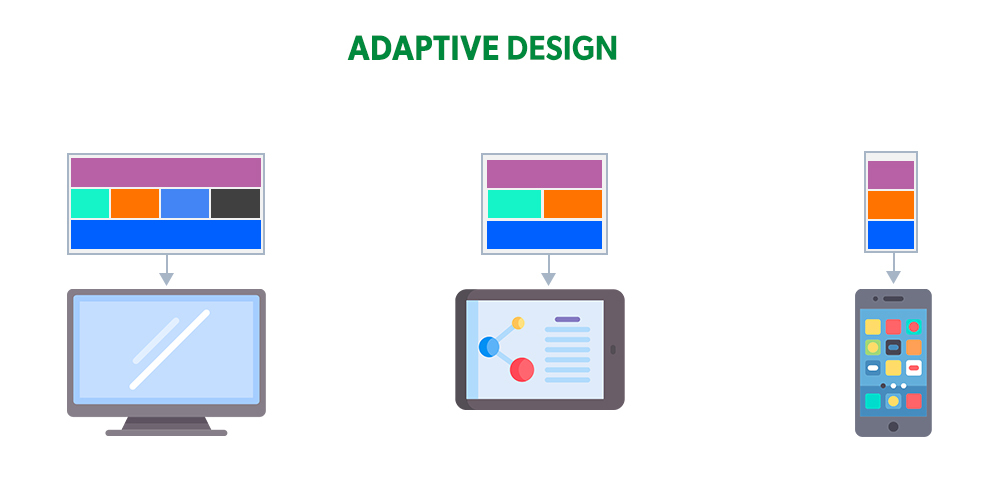
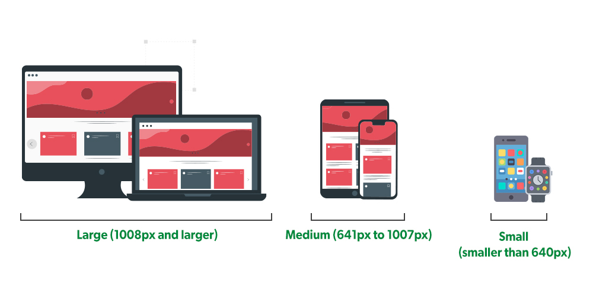

Adaptive Design Patterns

- Using Flex & Grid
- Using relative units
- Using min-width, max-width, min-height, max-height
- Using Media query
- 290-550px
- 550-768px
- 768-991px
- 991-1200px
- 1200-1440px
- 1440-1920px
- 1920+
- Hiding elements using Media query
- Mobile First
